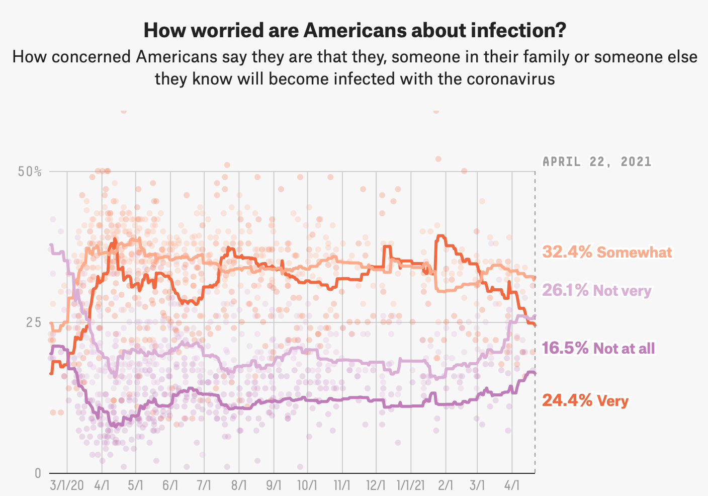
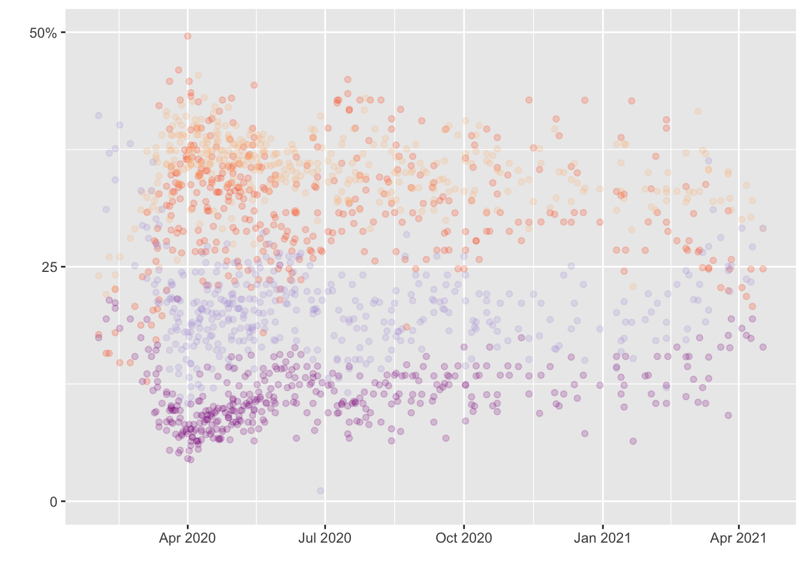
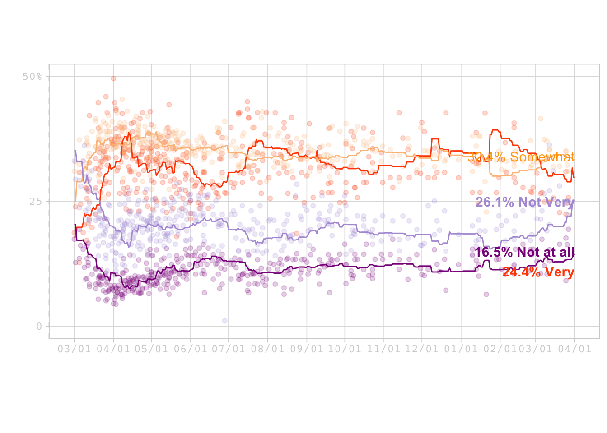

Visualization
This section focused on recreating a graph from a project from Fivethirtyeight entiteled How Americans View Biden’s Response To The Coronavirus Crisis.

Original Graphic
Loading packages
## here() starts at /Users/alexandragil/Desktop/MADA/ALEXANDRAGIL-MADA-portfolio##
## Attaching package: 'lubridate'## The following objects are masked from 'package:base':
##
## date, intersect, setdiff, unionData import
Import the dataset into R
#The graph contains 2 data sets.
data1 <- here::here("data", "covid_concern_polls_adjusted.csv")
Data1 <- read.csv(data1)
data2<- here::here("data", "covid_concern_toplines.csv")
Data2 <- read.csv(data2)
str(Data1)## 'data.frame': 601 obs. of 23 variables:
## $ subject : chr "concern-economy" "concern-economy" "concern-economy" "concern-economy" ...
## $ modeldate : chr "10/8/2021" "10/8/2021" "10/8/2021" "10/8/2021" ...
## $ party : chr "all" "all" "all" "all" ...
## $ startdate : chr "1/27/2020" "1/31/2020" "2/7/2020" "2/13/2020" ...
## $ enddate : chr "1/29/2020" "2/2/2020" "2/9/2020" "2/18/2020" ...
## $ pollster : chr "Morning Consult" "Morning Consult" "Morning Consult" "Kaiser Family Foundation" ...
## $ grade : chr "B" "B" "B" "" ...
## $ samplesize : num 2202 2202 2200 1207 2200 ...
## $ population : chr "a" "a" "a" "a" ...
## $ weight : num 0.831 0.756 0.698 1.867 0.484 ...
## $ influence : num 0 0 0 0 0 0 0 0 0 0 ...
## $ multiversions : logi NA NA NA NA NA NA ...
## $ tracking : logi NA NA NA NA NA NA ...
## $ very : num 19 26 23 22 32 41 38 36 38 34 ...
## $ somewhat : num 33 32 32 35 37 37 33 36 37 40 ...
## $ not_very : num 23 25 24 28 18 14 13 21 12 19 ...
## $ not_at_all : num 11 7 9 15 6 5 5 6 5 6 ...
## $ very_adjusted : num 15.7 22.7 19.7 26.9 28.7 ...
## $ somewhat_adjusted : num 36.6 35.6 35.6 33.2 40.6 ...
## $ not_very_adjusted : num 26.6 28.6 27.6 25.8 21.6 ...
## $ not_at_all_adjusted: num 11.63 7.63 9.63 13.45 6.63 ...
## $ timestamp : chr "14:00:32 8 Oct 2021" "14:00:32 8 Oct 2021" "14:00:32 8 Oct 2021" "14:00:32 8 Oct 2021" ...
## $ url : chr "https://morningconsult.com/wp-content/uploads/2020/02/200167_crosstabs_CORONAVIRUS_Adults_v2_JB-1.pdf" "https://morningconsult.com/wp-content/uploads/2020/02/200191_crosstabs_CORONAVIRUS_Adults_v2_JB-1.pdf" "https://morningconsult.com/wp-content/uploads/2020/02/200214_crosstabs_CORONAVIRUS_Adults_v4_JB.pdf" "http://files.kff.org/attachment/Topline-KFF-Health-Tracking-Poll-February-2020" ...## 'data.frame': 1176 obs. of 8 variables:
## $ subject : chr "concern-infected" "concern-economy" "concern-economy" "concern-infected" ...
## $ modeldate : chr "9/24/2021" "9/24/2021" "9/23/2021" "9/23/2021" ...
## $ party : chr "all" "all" "all" "all" ...
## $ very_estimate : num 24.5 49 49 24.5 24.5 ...
## $ somewhat_estimate : num 32.5 35.5 35.5 32.5 32.5 ...
## $ not_very_estimate : num 26.2 10.3 10.3 26.2 26.2 ...
## $ not_at_all_estimate: num 16.38 3.74 3.74 16.38 16.38 ...
## $ timestamp : chr "14:00:37 24 Sep 2021" "14:00:33 24 Sep 2021" "12:15:29 23 Sep 2021" "12:15:34 23 Sep 2021" ...## Rows: 601
## Columns: 23
## $ subject <chr> "concern-economy", "concern-economy", "concern-eco…
## $ modeldate <chr> "10/8/2021", "10/8/2021", "10/8/2021", "10/8/2021"…
## $ party <chr> "all", "all", "all", "all", "all", "all", "all", "…
## $ startdate <chr> "1/27/2020", "1/31/2020", "2/7/2020", "2/13/2020",…
## $ enddate <chr> "1/29/2020", "2/2/2020", "2/9/2020", "2/18/2020", …
## $ pollster <chr> "Morning Consult", "Morning Consult", "Morning Con…
## $ grade <chr> "B", "B", "B", "", "B", "", "B", "A-", "B", "C", "…
## $ samplesize <dbl> 2202, 2202, 2200, 1207, 2200, 1051, 2201, 866, 199…
## $ population <chr> "a", "a", "a", "a", "a", "a", "a", "rv", "rv", "a"…
## $ weight <dbl> 0.8306209, 0.7564292, 0.6982706, 1.8669666, 0.4844…
## $ influence <dbl> 0, 0, 0, 0, 0, 0, 0, 0, 0, 0, 0, 0, 0, 0, 0, 0, 0,…
## $ multiversions <lgl> NA, NA, NA, NA, NA, NA, NA, NA, NA, NA, NA, NA, NA…
## $ tracking <lgl> NA, NA, NA, NA, NA, NA, NA, NA, NA, NA, NA, NA, NA…
## $ very <dbl> 19, 26, 23, 22, 32, 41, 38, 36, 38, 34, 33, 36, 35…
## $ somewhat <dbl> 33, 32, 32, 35, 37, 37, 33, 36, 37, 40, 40, 37, 36…
## $ not_very <dbl> 23, 25, 24, 28, 18, 14, 13, 21, 12, 19, 19, 16, 14…
## $ not_at_all <dbl> 11, 7, 9, 15, 6, 5, 5, 6, 5, 6, 6, 11, 4, 7, 5, 9,…
## $ very_adjusted <dbl> 15.67595, 22.67595, 19.67595, 26.94042, 28.67595, …
## $ somewhat_adjusted <dbl> 36.57578, 35.57578, 35.57578, 33.17076, 40.57578, …
## $ not_very_adjusted <dbl> 26.595179, 28.595179, 27.595179, 25.812578, 21.595…
## $ not_at_all_adjusted <dbl> 11.630194, 7.630194, 9.630194, 13.449881, 6.630194…
## $ timestamp <chr> "14:00:32 8 Oct 2021", "14:00:32 8 Oct 2021", "1…
## $ url <chr> "https://morningconsult.com/wp-content/uploads/202…Cleaning the data
Creating PLOT 1
Plot_concern<-ggplot()+
geom_point(data = concern, mapping=aes(x=startdate , y= very_adjusted),
alpha=0.2, color="#FF4C00") +
geom_point(data = concern, mapping=aes(x=startdate , y= somewhat_adjusted),
alpha=0.2, color="#FCBE85") +
geom_point(data = concern, mapping=aes(x=startdate , y= not_very_adjusted),
alpha=0.2, color="#B19CD9") +
geom_point(data = concern, mapping=aes(x=startdate , y= not_at_all_adjusted), alpha=0.2, color="#8B008B") +
xlab(" ") +
ylab(" ") + scale_y_continuous(limits= c(0, 50), breaks=c(0, 25, 50), labels=c("0", "25", "50%"))
print(Plot_concern)## Warning: Removed 4 rows containing missing values (geom_point).## Warning: Removed 1 rows containing missing values (geom_point).## Warning: Removed 7 rows containing missing values (geom_point).
Data 2 (Lines)
#Filter by “concern-infected”
infected <- Data2 %>%
filter(subject=="concern-infected") %>%
select(subject, modeldate, very_estimate, somewhat_estimate, not_very_estimate,
not_at_all_estimate)
### Covert date format with lubridate package
infected$modeldate <- mdy(infected$modeldate)###Creating the plot
#Color-Hex Code
#LightPurple = #B19CD9
#Darkmagenta = #8B008B
#Orange = #FF4C00
#Baby orange = #FCBE85
p1<- ggplot()+
geom_line(data=infected, mapping=aes(x=modeldate, y=very_estimate), color="#FF4C00") +
geom_line(data=infected, mapping=aes(x=modeldate, y=somewhat_estimate), color="#FCBE85") +
geom_line(data=infected, mapping=aes(x=modeldate, y=not_very_estimate), color="#B19CD9") +
geom_line(data=infected, mapping=aes(x=modeldate, y=not_at_all_estimate), color="#8B008B") +
xlab(" ") +
ylab(" ") + scale_y_continuous(limits= c(0, 50), breaks=c(0, 25, 50), labels=c("0", "25", "50%"))
print (p1)
#Its time to combine both plots Plot_concern + p1 (Lines)
Final_Graph <- ggplot()+
geom_point(data = concern, mapping=aes(x=startdate , y= very_adjusted),
alpha=0.2, color="#FF4C00") +
geom_point(data = concern, mapping=aes(x=startdate , y= somewhat_adjusted),
alpha=0.2, color="#FCBE85") +
geom_point(data = concern, mapping=aes(x=startdate , y= not_very_adjusted),
alpha=0.2, color="#B19CD9") +
geom_point(data = concern, mapping=aes(x=startdate , y= not_at_all_adjusted),
alpha=0.2, color="#8B008B") +
geom_line(data=infected, mapping=aes(x=modeldate, y=very_estimate), color="#FF4C00") +
geom_line(data=infected, mapping=aes(x=modeldate, y=somewhat_estimate), color="#FCBE85") +
geom_line(data=infected, mapping=aes(x=modeldate, y=not_very_estimate), color="#B19CD9") +
geom_line(data=infected, mapping=aes(x=modeldate, y=not_at_all_estimate), color="#8B008B") +
xlab(" ") +
ylab(" ") + scale_y_continuous(limits= c(0, 50), breaks=c(0, 25, 50), labels=c("0", "25", "50%"))+
theme_light(base_size = 12, base_family = "mono") +
theme(
panel.border = element_rect(color = "#D3D3D3"),
panel.grid.minor.x = element_blank(),
panel.grid.minor.y = element_blank(),
axis.line.y.left = element_line(color = "#D3D3D3", linetype = 2),
axis.line.y.right = element_line(color = "#D3D3D3", linetype = 2),
axis.text = element_text(colour = "#D3D3D3"),
axis.title = element_text(colour = "#D3D3D3"),
axis.ticks = element_line(colour = "#D3D3D3"),
aspect.ratio=3/6) +
scale_x_date( date_breaks = "1 month", date_labels = "%m/%d", limits= as.Date(c('2020-03-01','2021-04-01'))) +
annotate(geom = "text", x = as.Date("2021-04-01"), y =35,
label = "32.4% Somewhat",
color = "#FFA500",
size = 4,
fontface = 1,
vjust = 1,
hjust = 1) +
annotate("text", x = as.Date("2021-04-01"), y = 12,
label = "24.4% Very",
color = "#FF4C00",
size = 4,
fontface = 2,
vjust = 1,
hjust = 1) +
annotate("text", x = as.Date("2021-04-01"), y = 26,
label = "26.1% Not Very",
color = "#B19CD9",
size = 4,
fontface = 2,
vjust = 1,
hjust = 1) +
annotate("text", x = as.Date("2021-04-01"), y = 16,
label = "16.5% Not at all",
color = "#8B008B",
size = 4,
fontface = 2,
vjust = 1,
hjust = 1)
print(Final_Graph) ## Warning: Removed 17 rows containing missing values (geom_point).## Warning: Removed 14 rows containing missing values (geom_point).## Warning: Removed 13 rows containing missing values (geom_point).## Warning: Removed 20 rows containing missing values (geom_point).## Warning: Removed 191 row(s) containing missing values (geom_path).
## Warning: Removed 191 row(s) containing missing values (geom_path).
## Warning: Removed 191 row(s) containing missing values (geom_path).
## Warning: Removed 191 row(s) containing missing values (geom_path).